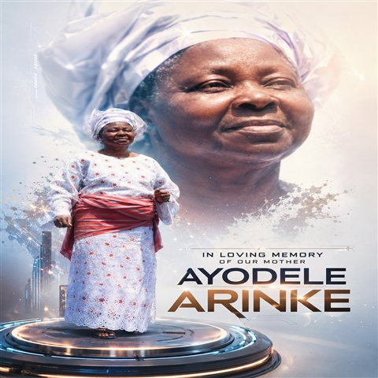

Olawuyi Victoria
Ayodele Arinke
23 · 05 · 1942 — 28 · 06 · 2014
A woman of grace, love, and unwavering strength.
🖼
Gallery
Photographs of her life
🎙
Recordings
Her voice & videos
✦
Timeline
A life well lived
💬
Memories
Family tributes
🤲
Foundation
Ayodele Arinke Foundation